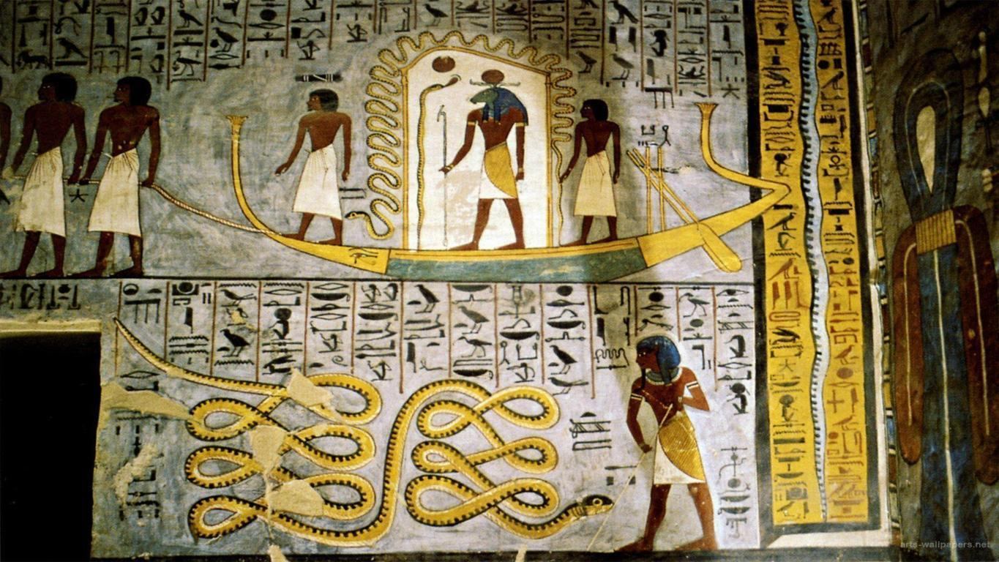
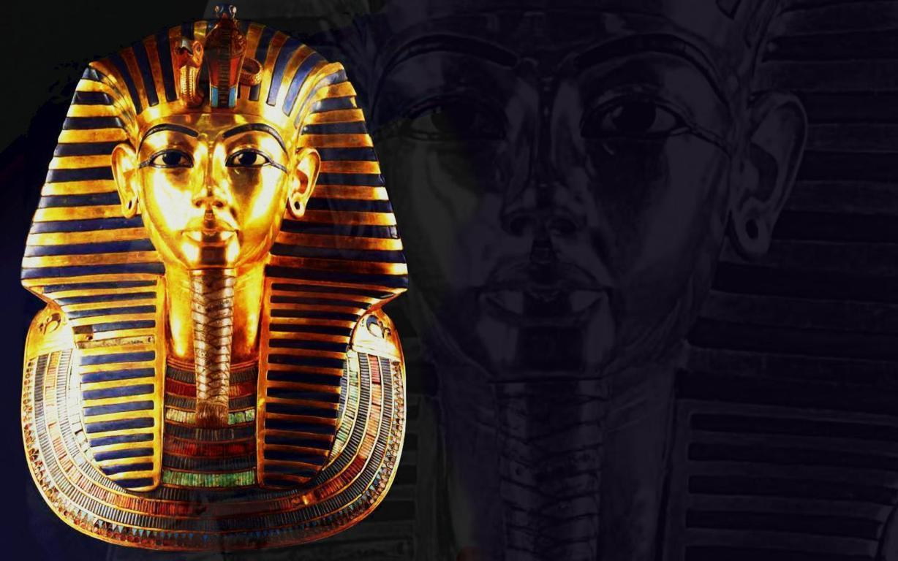
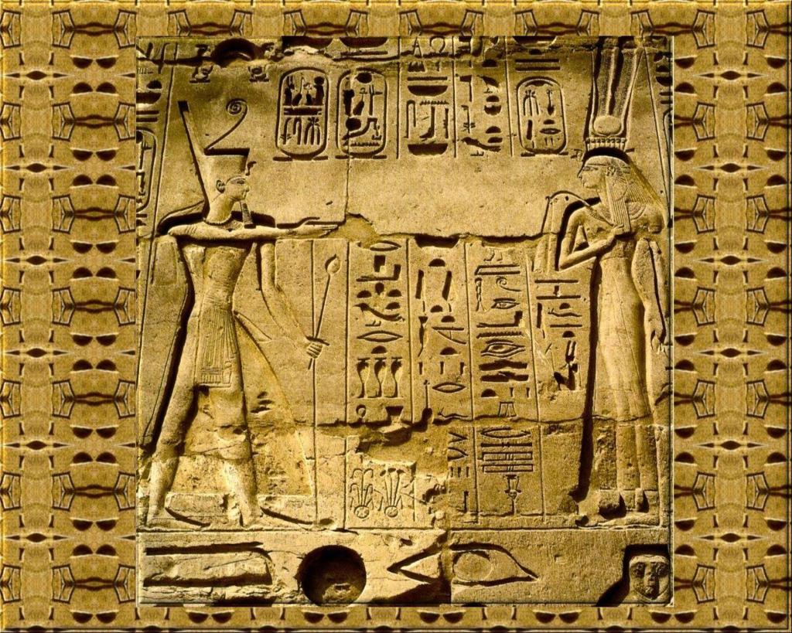
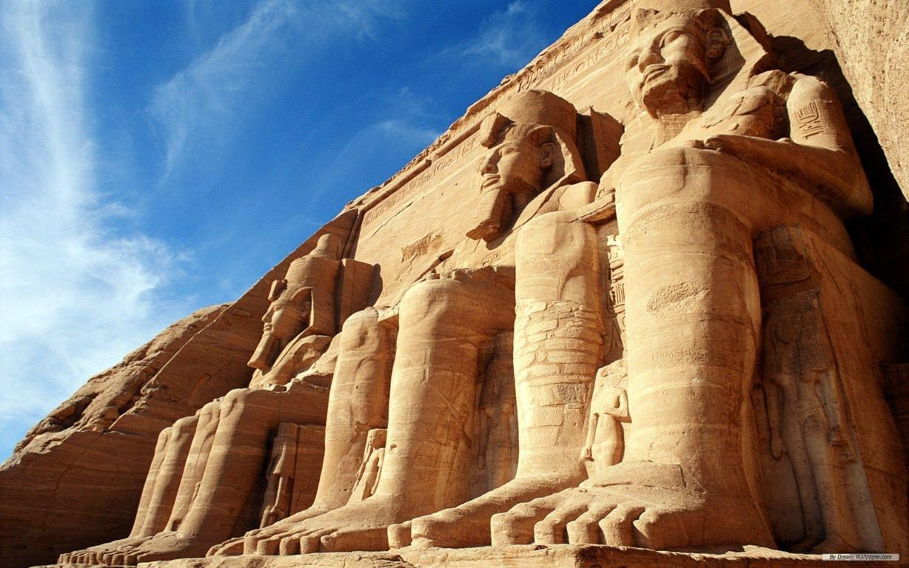
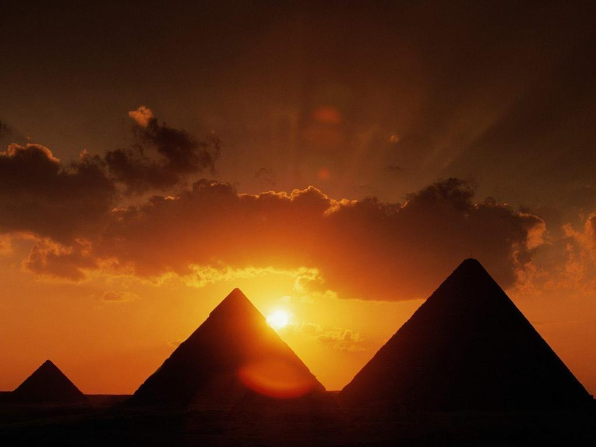
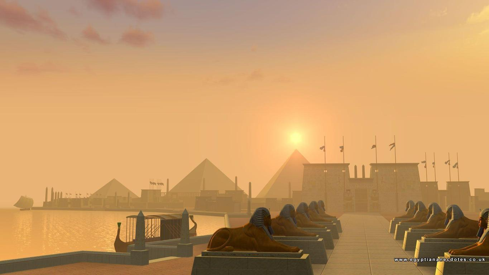

The Ancient Civilization
☰ Menu
The Ancient Egypt
Tale of Ancient Egypt

The Nile has been the lifeline of its region for much of human history.[9] The fertile floodplain of the Nile gave humans the opportunity to develop a settled agricultural economy and a more sophisticated, centralized society that became a cornerstone in the history of human civilization.[10] Nomadic modern human hunter-gatherers began living in the Nile valley through the end of the Middle Pleistocene some 120,000 years ago. By the late Paleolithic period, the arid climate of Northern Africa became increasingly hot and dry, forcing the populations of the area to concentrate along the river region.

Early Dynastic Period (c. 3050–2686 BC)
The Early Dynastic Period was approximately contemporary to the early Sumerian-Akkadian civilisation of Mesopotamia and of ancient Elam. The third-century BC Egyptian priest Manetho grouped the long line of pharaohs from Menes to his own time into 30 dynasties, a system still used today.[22] He chose to begin his official history with the king named "Meni" (or Menes in Greek) who was believed to have united the two kingdoms of Upper and Lower Egypt (around 3100 BC).[23]
The transition to a unified state happened more gradually than ancient Egyptian writers represented,
Major advances in architecture, art, and technology were made during the Old Kingdom, fueled by the increased agricultural productivity and resulting population, made possible by a well-developed central administration.[28] Some of ancient Egypt's crowning achievements, the Giza pyramids and Great Sphinx, were constructed during the Old Kingdom. Under the direction of the vizier, state officials collected taxes, coordinated irrigation projects to improve crop yield, drafted peasants to work on construction projects, and established a justice system to maintain peace and order.
After Egypt's central government collapsed at the end of the Old Kingdom, the administration could no longer support or stabilize the country's economy. Regional governors could not rely on the king for help in times of crisis, and the ensuing food shortages and political disputes escalated into famines and small-scale civil wars. Yet despite difficult problems, local leaders, owing no tribute to the pharaoh, used their new-found independence to establish a thriving culture in the provinces. Once in control of their own resources, the provinces became economically richer—which was demonstrated by larger
Middle Kingdom (2134–1690 BC)
Amenemhat III, the last great ruler of the Middle Kingdom The pharaohs of the Middle Kingdom restored the country's prosperity and stability, thereby stimulating a resurgence of art, literature, and monumental building projects.[36] Mentuhotep II and his Eleventh Dynasty successors ruled from Thebes, but the vizier Amenemhat I, upon assuming kingship .

Second Intermediate Period (1674–1549 BC)
Temple of Derr ruins at 1960. Around 1785 BC, as the power of the Middle Kingdom pharaohs weakened, a Western Asian people called the Hyksos had already settled in the Eastern Delta town of Avaris, seized control of Egypt, and forced the central government to retreat to Thebes. The pharaoh was treated as a vassal and expected to pay tribute.[42] The Hyksos ("foreign rulers")

Third Intermediate Period (1069–653 BC)
Main article: Third Intermediate Period of Egypt Following the death of Ramesses XI in 1078 BC, Smendes assumed authority over the northern part of Egypt, ruling from the city of Tanis. The south was effectively controlled by the High Priests of Amun at Thebes, who recognized Smendes in name only.[56] During this time, Berber tribes from what was later to be called Libya had been settling in the western delta, and the chieftains of these settlers began increasing their autonomy. Libyan princes took control of the delta under Shoshenq I in 945 BC, founding the Libyan Berber, or Bubastite, dynasty that ruled for some 200 years. Shoshenq also gained control of southern Egypt by placing his family members in important priestly positions. In the mid-ninth century BC, Egypt made a failed attempt to once more gain a foothold in Western Asia. Osorkon II of Egypt, along with a large alliance of nations and peoples, including Persia, Israel, Hamath, Phoenicia/Canaan, the Arabs, Arameans, and neo Hittites among others, engaged in the Battle of Karkar against the powerful Assyrian king Shalmaneser III in 853 BC. However, this coalition of powers failed and the Neo Assyrian Empire continued to dominate Western Asia. Libyan Berber control began to erode as a rival native dynasty in the delta arose under Leontopolis. Also, the Nubians of the Kushites threatened Egypt from the lands to the south.[57]


From the 10th century BC onwards, Assyria fought for control of the southern Levant. Frequently, cities and kingdoms of the southern Levant appealed to Egypt for aid in their struggles against the powerful Assyrian army. Taharqa enjoyed some initial success in his attempts to regain a foothold in the Near East. Taharqa aided the Judean King Hezekiah when Hezekiah and Jerusalem was besieged by the Assyrian king, Sennacherib. Scholars disagree on the primary reason for Assyria's abandonment of their siege on Jerusalem. Reasons for the Assyrian withdrawal range from conflict with the Egyptian/Kushite army to divine intervention to surrender to disease.[68] Henry Aubin argues that the Kushite/Egyptian army saved Jerusalem from the Assyrians and prevented the Assyrians from returning to capture Jerusalem for the remainder of Sennacherib's life (20 years).[69] Some argue that disease was the primary reason for failing to actually take the city; however, Senacherib's annals claim Judah was forced into tribute regardless.[70]
Sennacherib had been murdered by his own sons for destroying the rebellious city of Babylon, a city sacred to all Mesopotamians, the Assyrians included. In 674 BC Esarhaddon launched a preliminary incursion into Egypt; however, this attempt was repelled by Taharqa.[71] However, in 671 BC, Esarhaddon launched a full-scale invasion. Part of his army stayed behind to deal with rebellions in Phoenicia, and Israel. The remainder went south to Rapihu, then crossed the Sinai, and entered Egypt. Esarhaddon decisively defeated Taharqa, took Memphis, Thebes and all the major cities of Egypt, and Taharqa was chased back to his Nubian homeland. Esarhaddon now called himself "king of Egypt, Patros, and Kush", and returned with rich booty from the cities of the delta; he erected a victory stele at this time, and paraded the captive Prince Ushankhuru, the son of Taharqa in Nineveh. Esarhaddon stationed a small army in northern Egypt and describes how "All Ethiopians (read Nubians/Kushites) I deported from Egypt, leaving not one left to do homage to me".[72] He installed native Egyptian princes throughout the land to rule on his behalf.[73] The conquest by Esarhaddon effectively marked the end of the short lived Kushite Empire.